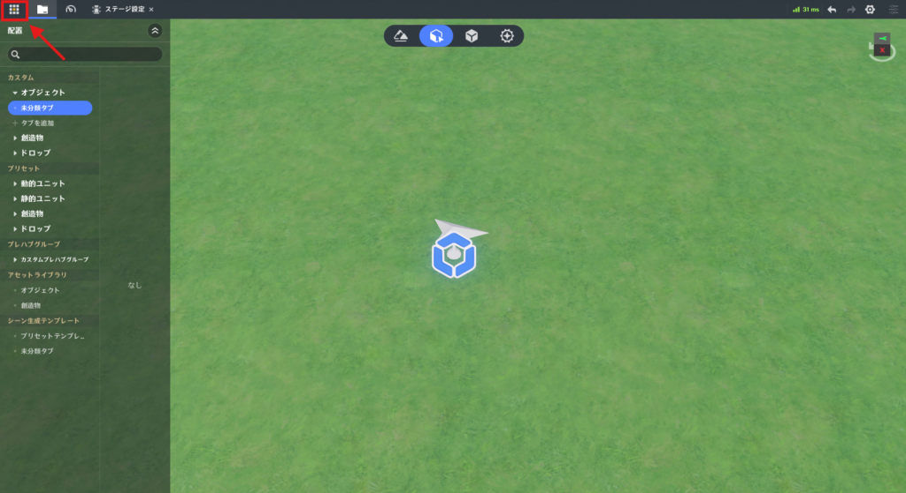
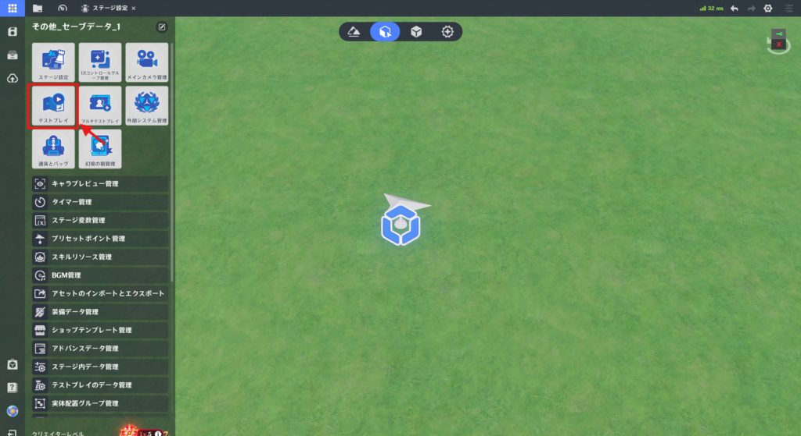
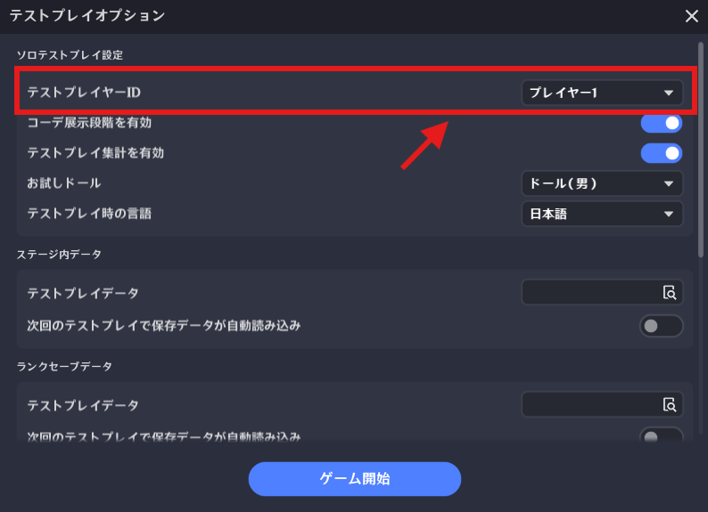
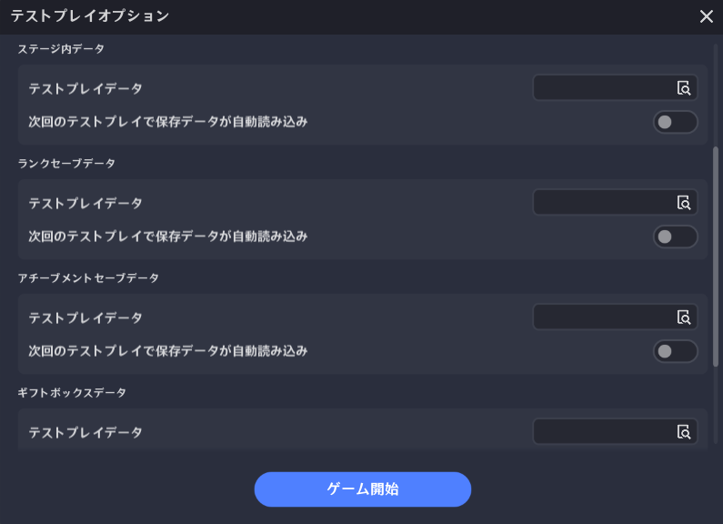
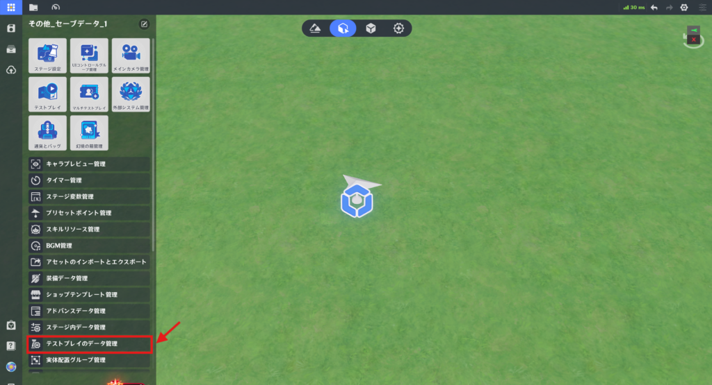
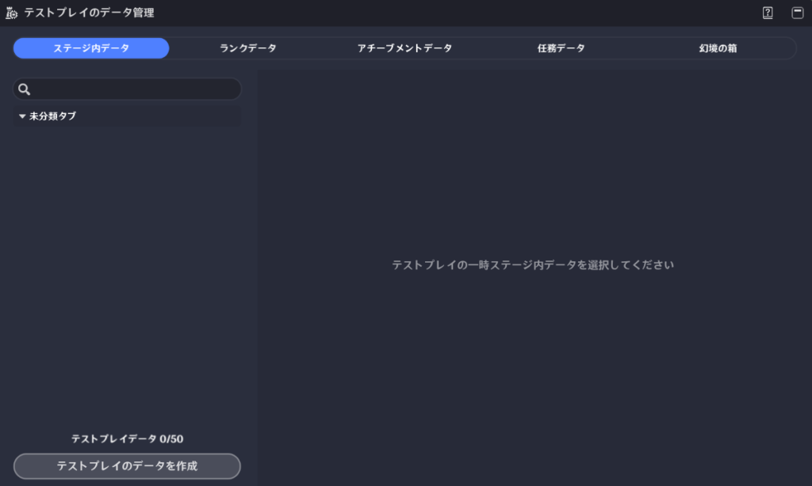
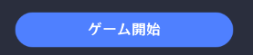
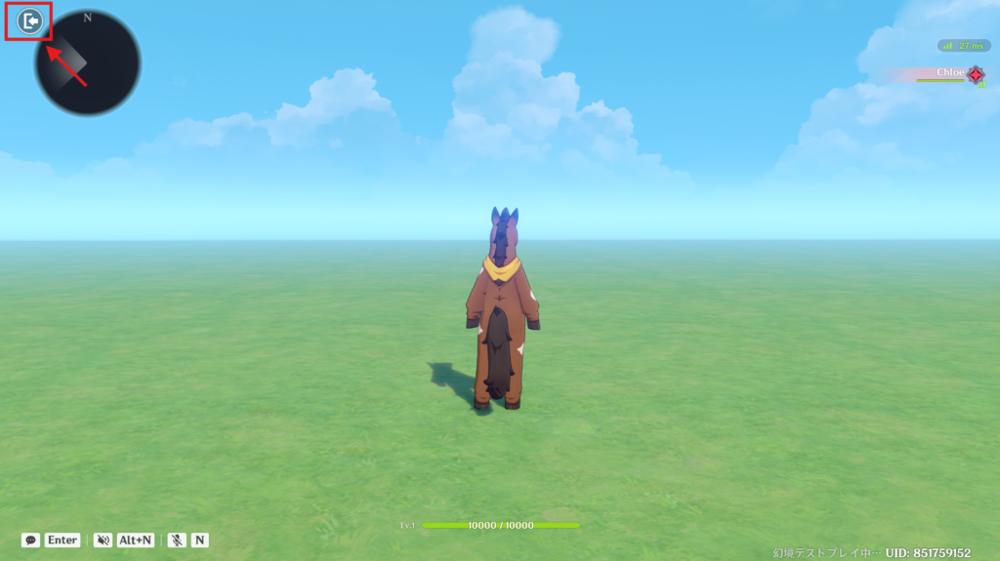
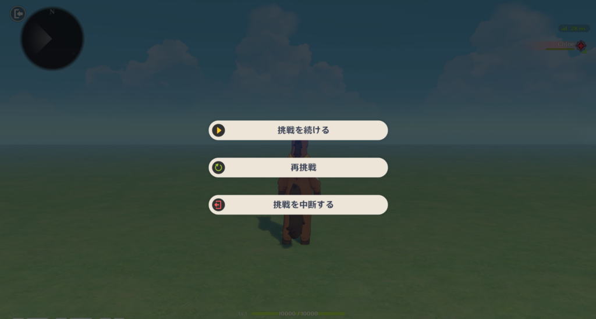

テストプレイ
⭐1.機能概要
「テストプレイ」機能は、作成したステージのテストに使用できます。クリエイターは、さまざまな状況に応じた「テストプレイ設定」や「テストプレイ操作」を行うことができ、ステージの動作を素早く検証することができます。
⭐2.開き方

左上のシステムメニューを開きます。

⭐3.利用制限
マルチプレイテストルームが有効な間は、テストプレイ機能を使用することができません。⭐4.テストプレイの検証
「テストプレイ」をクリックすることで、テストプレイ検証が行われ、すべてのチェックがOKであれば、テストプレイオプションが開きます。※ここのチェックは幻境ステージを起動するためのチェックであり、ノードグラフが正しいかをチェックしているわけではありません。
⭐5.テストプレイの流れ
テストプレイは、事前準備（アップロード、検証プロセス）、外観表示、ロード画面、ステージ入場、リザルト（ステージ終了処理）という一連の流れで構成されます。🌸1.テストプレイの事前準備
(1) テストプレイヤーの選択
テストプレイで使用するプレイヤーIDを設定することで、その設定したプレイヤーでテストプレイを行うことができます。
※幻境を遊ぶ旅人さんは、必ずプレイヤー1に入ってくれるわけではないので、どのプレイヤーからゲームを開始されたとしても遊べるようにテストしておくことをお勧めします。

作成したテストデータを設定することで、ある一定の状態からテストプレイを始めることができます。

システムメニュー⇒「テストプレイのデータ管理」

🌸2.コーデ展示段階を有効
無効にすることで、テストプレイ時にコーデ展示のフェーズをスキップして、直接ロード画面へ移動します。
🌸3.テストプレイ集計を有効
プレイヤーはゲームをクリアするか手動で終了することで、ステージ集計を発生させます。
無効にすることで、ステージ集計関連のステップをスキップします。
🌸4.お試しドール
テストプレイオプションで設定したドールでテストプレイを開始します。
🌸5.テストプレイ時の言語
テストプレイオプションで設定した言語でテストプレイを開始します。
翻訳機能を付けている場合は、ここで言語を変更して問題なく翻訳できているか確認しましょう。
🌸6.ロード画面の設定
「ステージ設定」の「ロード画面」で設定をしてください。
🌸7.ロード画面の設定

ボタンをクリックすると、クリエイターの設定に沿って、ステージ入場フローが実行されます。
※コーデ展示⇒ローディング画面⇒ステージ入場
⭐6.テストプレイ中の操作
🌸1.退出

テストプレイ中に、左上の「退出」ボタン または Escキーから「テストプレイ制御画面」を開くことができます。
🌸2.テストプレイ制御

(1) 挑戦を続ける
現在実行中のテストプレイに戻ります。
(2) 再挑戦
ステージ入場フローを再実行し、新しいテストプレイを開始します。
(3) 挑戦を中断する
現在のテストプレイを終了し、それに応じたステージ集計結果を生成します。